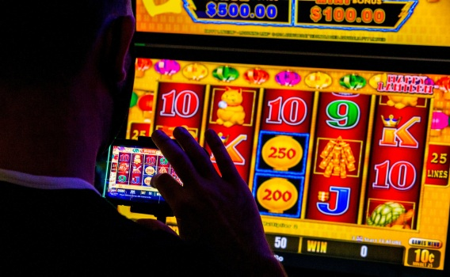

There are differences between playing live Texas Holdem Game and Playing Online
If you're familiar with playing Texas holdem online, you'll experience a completely different experience when you start playing live poker. The game has so many differentiators between the online version of the game, and the live one held in a casino that the first live game could be a bit intimidating when you first play. Let's take a look at some of the distinctions.
Hands played per Hour
If you have one table to play it will be around 60 hands an hour. Naturally, the amount may change or decrease somewhat, but it's an excellent starting base. If you're an experienced online player, you're playing more than one table at once. There are players who have 16 tables playing at two different sites at the same time. My limit online is four tables that are active in a good day. When I play four tables, I'll see about 250 hours of hands played per hour.
In the poker room , I can only be a player at one table. It is physically impossible. Situs Judi Slot Online Terpercaya I'll see about 30 hand per minute. It's like the game would appear to be slow for the player online however it's not. There's too much happening in the game that it's difficult to follow until you become accustomed to the noise.
In the same way those who have grown accustomed to continuous action online can be irritable when they play live.
Hole Cards
Your hole cards online are displayed to you. They don't leave your sight until you mess them up, and even then they could be recovered with just a mouseover. It is impossible to forget what you've got since it's always in your possession.

In a live poker game, the cards are dealt face-down and, upon looking at them and deciding to play, most players place chips over their heads for security. The game is based on memory as you play.
When you are playing live poker, there are two different schools of thought on reviewing your poker cards. One school believes that looking back will give an opponent unnecessary details. They recommends that you do not look back for a second. Another school of thought says that looking back doesn't provide your opponent with more information than they already have , so it's best to be safe rather than regretting it. It is recommended to check when you're required to, even if you aren't.
The Decision Making Process Time
There are more than a hundred hands being played online but the time it takes to make a tough decision is extremely brief. Making decisions in a hurry can cause misinterpretations, and I've found that the term "tight" is the best on the internet.
When playing live However, players have a lot of flexibility in the time they are given to make difficult decisions when playing no limit holdem. It is not unusual for players to make excuses for taking too long in making difficult decisions. It's also not unheard of for a player to "call the clock" against a player who has taken too long, but it is a rare occurrence and is considered to be a bad thing.
When I play live, I make sure to make the identical amount of time to make every choice, even the easy ones. Sometimes, however, I'm forced into making a difficult choice and will not be afraid to make the necessary time must make to game. Naturally, this reduces my game speed in ways that the game online cannot tolerate.
The Chaos at the Table Live Table
On the internet, you can only use the chat window to interrupt your stream of thought. If it's bothersome, you'll be able to silence the player who is causing trouble. On the internet, there's no one offering complimentary drinks, and the dealer is not talking, and there aren't any discussions going on when players aren't in an agreement.
This is not the case when you play live. Conversations continue to flow on continuously. Situs Judi Slot Online Terpercaya Poker is a game of social interaction and that's a an integral part. There are a few hands at where a server isn't accepting orders for drinks that are free. There's noise from other tables, and in the one room that I play in, the roaring of the slot machines never stops. All this noise tends to disturb your concentration If you're unable to shut the door.
Although these aren't the only distinctions between online as well as live gaming, they're most commonly observed. It can take some time to get used to when you move from online games to live poker games. I have made the transition and am now a fan of the interaction with friends in a live games.